LLM-Harness · 归档于 2026-11-26
OPAL
Reactive Optimizers
归档到 LLM/Harness：一个 coding agent 被放进长时间运行的训练循环里，靠自己写的两个程序观察和控制它，是 agent loop 本身的设计，不涉及机器人。
TL;DR
- Problem
- optimizer 的 recipe 在训练前写死；换了模型或数据、又只够跑一次时，它不合适也没人改。
- Idea
- 训练中让 agent 反复重写两个程序：
analysis.py（它想看什么）和updater.py（每个 parameter group 怎么更新）；zero-shot，不做 meta-training。 - Result
- LightningDiT-XL/1 一次 run：FID-50K 4.33，官方 recipe 5.15；agent 约 100 次 decision 花 $6.42，不等 agent 时多 1.14× 时间。
Problem
没有调好的 recipe，又只够跑一次：训练出了状况没人管
Running example · 后面每个 stage 都跟着它走
LightningDiT-XL/1 这一次 run：ImageNet 256×256 图像生成，64 epochs = 80,000 updates，起点是官方 recipe（AdamW），agent 是 Claude Opus 5.5 → 想要：不做 sweep，一次跑完，FID-50K 比官方 recipe 低。
flowchart LR IN["例子输入
LightningDiT-XL/1
只够跑一次"] IN --> A1["官方 recipe 原样跑
AdamW，规则训练前写死"] A1 --> AX["80K updates 一行不改
FID-50K 5.15"]:::gap IN --> B1["借别处调好的 recipe
NanoGPT 榜 #21 Shampoo"] B1 --> BX["换成中文数据就掉队
4.2977，输给 AdamW 4.2570"]:::gap IN --> C1["Sweep
Goldfish：再跑 9 个 recipe"] C1 --> CX["多花 9 整轮训练
80.89，OPAL 一轮 81.11"]:::gap IN --> D1["跨 run 搜索 / meta-train
AI Scientist、VeLO"] D1 --> DX["要很多 run 或先训 optimizer
找到后仍然写死"]:::gap
第 1 条是例子本身（Fig. 1g）。第 2、3 条论文是在 NanoGPT 和 Goldfish 上报告的（Fig. 1a/c/f，Appendix C.2）：Shampoo 在原设定赢 AdamW（3,975 对 5,625 updates），换语言后反过来。第 4 条论文没有跑实验，只在 Introduction 和 Appendix A 里说明。
根本问题：规则都写在训练之前，训练中发生什么都没人看、没人改。 这篇的切入点：让一个通用 agent 在这一次 run 里边看边改 optimizer 的代码。
先认几个词
| 词 | 白话 | 在例子里 |
|---|---|---|
| recipe | optimizer + 超参 + schedule，训练前定好 | LightningDiT 官方的 AdamW 配置 |
| parameter group | 共用一条更新规则的一组权重 | attention / MLP 矩阵、adaLN、timestep embedder |
| AdamW | 每个权重各算各的步长 | 起点：所有权重都用它 |
| Muon | 把一个权重矩阵当整体，更新先正交化 | step 800 起 block 里的矩阵改用它 |
| adaLN | DiT 里把 timestep / class 条件注入每层的 modulation 权重（通用含义，论文没解释） | step 4,000 也搬到 Muon |
| cooldown | 训练末段把 learning rate 降到接近 0 | 起点改了两次：60K → 54K → 50K |
| decision | 问 agent 一次；它也可以什么都不改 | 约 100 次，其中 13 次改了程序 |
| FID-50K | 用 5 万张生成图算的质量分，越低越好 | 4.33 对 5.15（不带 guidance） |
Related work
| 相关工作 | 解决什么 | 怎么解决 | 和本文的区别 |
|---|---|---|---|
| 同一问题 · 别的解法 | |||
| 手工 optimizer 和 schedule Adam、Shampoo / SOAP、Muon、SGDR | 训练该怎么走的先验 | 规则训练前写好 | 只按预先写的规则变 → 本文在 run 中改规则本身 |
| 跨 run 自动搜索 AI Scientist、autonomous speedrunning、Symbolic Discovery | 找更好的 optimizer | 跑很多 run 来搜 | 要很多 run，结果还是静态的 → 本文只用一次 run |
| 学出来的 optimizer / step-size controller Andrychowicz et al.、Li & Malik、Daniel et al.、VeLO、Optim4RL、OPEN | 更新随训练状态变化 | 在很多优化任务上 meta-train 一个网络 | 要专门 meta-training → 本文用现成 agent，zero-shot（本文自己这一脉） |
| 在线选超参 Population Based Training、AdaQN | 训练中找超参 schedule | 同时训一群模型或多个 critic 再挑 | 要并行多份，只动超参 → 本文单个 run，整个算法可重写 |
| 相似做法 · 别的问题 | |||
| 模型指挥自己的 fine-tuning SEAL | LM 自己适应新数据 | RL 训 LM 生成 fine-tuning 数据和超参指令 | 要先用 RL 训这个 LM，输出的是指令 → 本文不训 agent，改的是可执行的更新代码 |
来源：Introduction 和 Appendix A（Related work），未另行检索。Introduction 说本文建立在 VeLO、Daniel et al.、Population Based Training 和 SEAL 之上。
Level 1 · Big picture
代码是唯一的接口：agent 写一个程序看训练，写另一个程序改训练
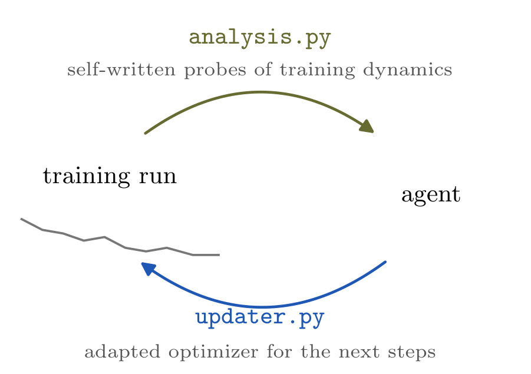
怎么读这张图
- 左 training run：正在跑的训练，例子里是 LightningDiT-XL/1 的 80,000 updates。
- 上 analysis.py（绿）：agent 自己写的探针，从训练状态里取它想知道的统计量，交给 agent。
- 下 updater.py（蓝）：agent 写的更新规则，训练的每一步都用它；例子里它从“全用 AdamW”被改了 13 次。
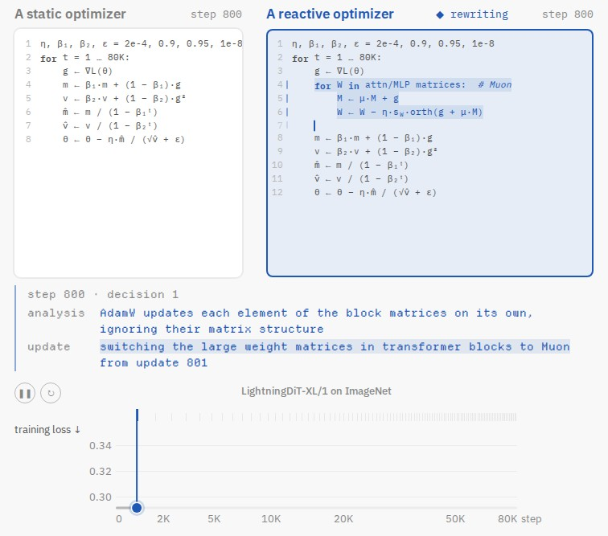
- 左 static：8 行 AdamW，80K 步不变。
- 右 reactive，高亮 4–6 行：agent 给 attn/MLP 矩阵加了一段 Muon；其余权重还走下面的 AdamW。
- 下方两行：analysis 是它看到的（AdamW 逐元素更新，忽略矩阵结构），update 是它改的（update 801 起换 Muon）。原页可以拖动时间轴看后面每次改动。
flowchart LR I["Input
官方 AdamW recipe
一次 80K-update run"] --> M["agent 边训边改代码
约 100 次 decision
13 次改了程序"]:::win M --> O["Output
FID-50K 4.33
官方 recipe 5.15"]
Level 2 · Stages
一个循环，5 步
flowchart TD S1["1 · Wrap
官方 AdamW，原样包起来"] --> S2["2 · Probe analysis.py
梯度–momentum cosine、spike log"]:::win S2 --> S3["3 · Decide agent
step 800：block 矩阵该换 Muon"]:::win S3 --> S4["4 · Rewrite updater.py
196 个矩阵 → Muon"]:::win S4 --> S5["5 · Swap in
update 801 起生效"] S5 -->|"下一次 decision"| S2 click S1 href "#stage-1" click S2 href "#stage-2" click S3 href "#stage-3" click S4 href "#stage-4" click S5 href "#stage-5"
点击 stage 展开 Level 3 细节。例子里 13 次改动的完整记录在 Stage 4。
Level 3 · Details
每个 stage 的细节
Stage 1 Wrap 现成的 optimizer + scheduler → 两个初始程序
- Why：不假设模型、数据或训练动态；从任务自带的 recipe 出发，agent 不动就等于原来的训练。
- How：一行
opal.wrap(opt, model, scheduler, total_steps, goal)（README）。 updater.py初始就是调用你原来的 optimizer 和 scheduler；analysis.py初始只有 loss 和梯度的几个统计量（README）。- agent 改之前，包过的 run 和原 run 逐 bit 相同（README）。
- agent 被要求不碰模型、数据、loss、batch size、步数和评测；这是规则，不是 sandbox（README）。
flowchart LR a["你的训练脚本
AdamW + scheduler"] --> b["opal.wrap
一句 goal：训什么、按什么评"] b --> c["updater.py = 原 optimizer
analysis.py = 基本统计"]
Running example 在这一步
官方 LightningDiT recipe（AdamW）→ step 0–799 和官方训练一样。
Stage 2 Probe · analysis.py 训练状态 → agent 读得下的一份报告
- Why：权重、activation、梯度原样给 agent 会撑爆 context（§2）。
- How：看什么也由 agent 自己写；探针全程跟着训练跑。
- 论文举的信号（§2）：每个 parameter group 的梯度范数、更新量相对权重的大小、相邻两步梯度的 cosine、哪些 tensor 梯度突然变大。
- agent 还能看到：goal、参数的名字和形状、training loss、训练脚本和模型代码的只读副本（README）。
flowchart LR a["训练状态
权重、梯度、loss"] --> b["analysis.py
agent 写的探针"]:::win b --> c["报告
每类矩阵、每层深度的
梯度–momentum cosine"]
Running example 在这一步
step 2,400：修了一个报告 bug，把梯度–momentum cosine 按矩阵类型和深度拆开，AdamW 的 tensor 也加上。step 17,600：加上 block 外每个 tensor 的梯度范数和一份 spike log（C.3）。
Stage 3 Decide · agent 报告 + loss + 这次 run 的全部历史 → 改不改、改什么、为什么
- Why：人只能做有限几次决定；agent 决定得勤，每次都能看整段历史（§3.1）。
- How：zero-shot，没有别的 run 留下的记忆；整个 run 是一段对话，每次 decision 留一句理由（README）。
- 它拿来当证据的四种做法（Appendix B）：
flowchart LR E1["Deduced from clues
SiT：cosine ≈ −0.22
→ 该组 LR 0.3× 降到 0.15×"] --> D["decision
改 updater.py"]:::win E2["A-B-A test
RAEv2：2× 比 1.5× 降得快
→ update 3,100 起用 2×"] --> D E3["Trial and error
RAEv2：1.3× → backbone 退回 1×
→ 全部 1.5×"] --> D E4["Re-planned cooldown
DiT：constant rate 几乎不动
→ 54K 提前到 50K"] --> D
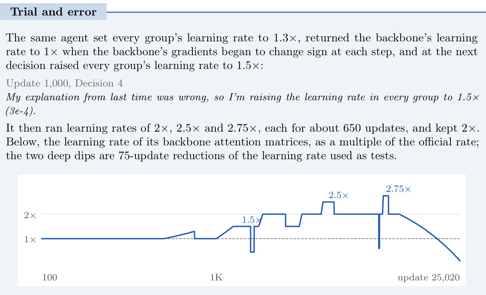
- 斜体那句：agent 自己的理由，“上次的解释错了，所以全部升到 1.5×”。
- 曲线的台阶：2×、2.5×、2.75× 各试约 650 updates，最后留在 2×。
- 两处很深的下探：把 rate 降 75 个 updates 当测试，量 step size 带来的 loss 噪声。
Running example 在这一步
step 800（decision 1）：看到“AdamW 逐元素更新 block 矩阵，忽略矩阵结构”→ 决定把它们换成 Muon（项目页动画）。step 39,200：看到 constant rate 下进展几乎停了 → 把 cooldown 起点从 54K 提前到 50K（C.3）。
Stage 4 Rewrite · updater.py decision → 每个 parameter group 的新更新规则
- Why：直接写代码，schedule、optimizer 类型、保护措施都能改，而且可以每个 parameter group 各不相同。
- How：例子里改动分四类：
flowchart LR U["updater.py"] --> K1["Optimizer 类型
800：196 个矩阵 → Muon
4,000：adaLN 也搬过去"]:::win U --> K2["LR schedule
4,800：Muon 步长升到 1.5×
13,600：1−√ cooldown，54K→76K"]:::win U --> K3["Guard
1,600：梯度范数超过
均值 3× 就降这步的 rate"]:::win U --> K4["Fix / revert
4,000：撤掉 3,200 加的 controller
18,400：guard 不再看噪声大的那层"]:::win
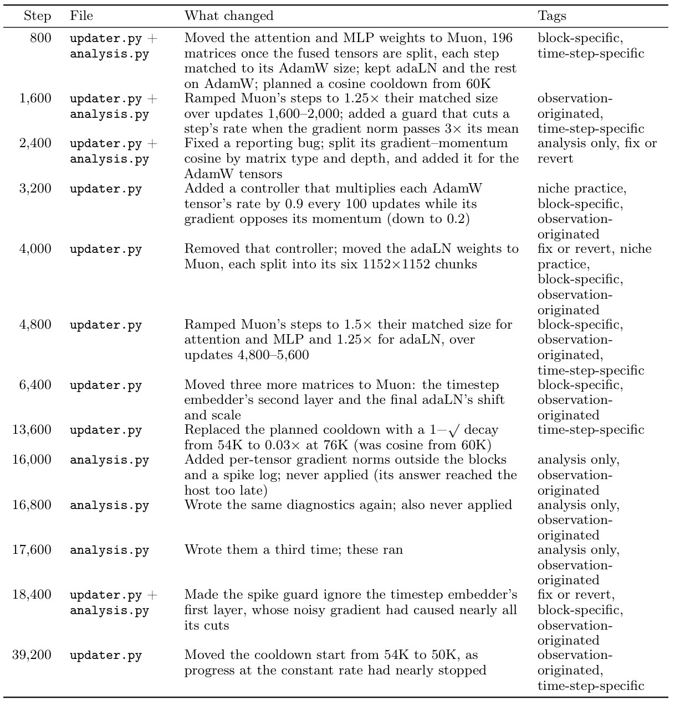
怎么读这张图
- Step 列：都是 800 的倍数（推断：每 800 updates 问一次，80,000 / 800 = 100，和 §4 的“约 100 次 decision”一致）。
- File 列：改的是哪个程序；16,000 起连续三行只改
analysis.py。 - 前 7 行（800–6,400）：逐步把更多矩阵搬到 Muon，并把 Muon 的步长升到 1.25×、1.5×。
- 3,200 → 4,000：加了一个按“梯度和 momentum 反向”降 rate 的 controller，下一次就撤掉。
- Tags 列：block-specific = 只动某类模块；observation-originated = 由探针看到的信号引出；fix or revert = 改自己之前的决定。
Running example 在这一步
Fig. 5 的计数：112 个矩阵在 update 801 换 Muon，4,001 加 28 个 adaLN，6,401 再加 2 个，共 142 个；C.3 写的 196 是把融合的 tensor 拆开后的个数。
Stage 5 Swap in 新程序 → 接管之后的每一步
- Why：每次都停下来等 agent 太慢（Fig. 9：1.30× 到 4.39×）。
- How：可以让训练继续，agent 的改动在之后某个 update 换入；Goldfish 上中位数晚 65 个 updates（§4）。
- optimizer 的决定大多不抢时间，所以晚一点影响小（§4）。
- 新的 updater 先试跑 20 步，报错就退回上一个程序；每个版本都存着（README）。
flowchart LR a["agent 在想
训练不停"] --> b["答案到了
之后某个 update 换入"] b --> c["到得太晚就不生效
16,000 和 16,800 的
analysis 改动"]:::gap
Running example 在这一步
step 16,000 和 16,800 写的 diagnostics 都没生效（答案到 host 太晚），17,600 第三次写才跑起来（C.3）。这次 run 不等 agent 的总时间估计为 1.14×，等的话 1.30×（Fig. 9）。
Recap：例子覆盖了论文的哪些 idea
| 论文里的 idea | 例子里在哪体现 |
|---|---|
| 代码是唯一接口，两个程序 | Stage 2 / 4：C.3 的 File 列 |
| zero-shot，从现成 recipe 出发 | Stage 1：官方 AdamW |
| 每个 parameter group 各自的 optimizer | Stage 4：800 / 4,000 / 6,400 分批搬到 Muon |
| 中途升 LR、重排 cooldown | Stage 4：1.25× → 1.5×；cooldown 60K → 54K → 50K |
| 压 gradient spike | Stage 4：1,600 的 guard，18,400 修它 |
| 改自己之前的决定 | Stage 4：3,200 → 4,000 |
| 不等 agent | Stage 5：16,000 / 16,800 没生效 |
| 数值精度（float32 moments） | 例子没有；NanoGPT Track 3 的 run，见 E2 |
| momentum 控制 | 例子没有；2D toy landscape，见 E3 |
| 数据损坏的 batch gate、抗 overfitting | 例子没有；ResNet-18 / CIFAR-10，见 E4、E5 |
Results
没有调好的 recipe 时，一次 run 里追平或超过固定 recipe；多数实验只跑了一次
E1 比最终质量 → E2 看 agent 实际改了什么 → E3–E5 三个受控实验（momentum、loss spike、overfitting）→ E6 算时间和钱。
E1没有为这个设定调过的 recipe，一次 run 能不能比固定 recipe 好？§1 · Fig. 1 · C.2
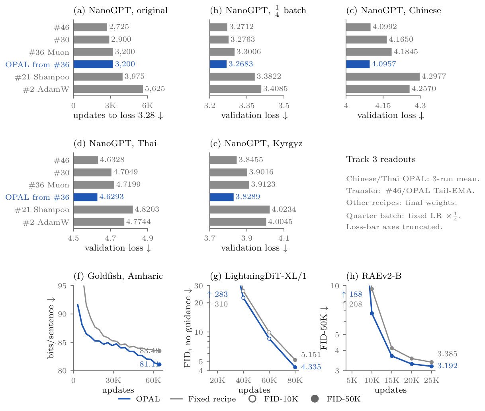
- (a) NanoGPT 原设定：recipe 都为它调过；OPAL 从 #36 出发，3,200 updates，和 #36 一样，输给 #46（2,725）和 #30（2,900）。
- (b)–(e) ¼ batch 和三种语言：没有专门的 recipe；OPAL 四个都最低，但只比 #46 低一点（如 Chinese 4.0957 对 4.0992）。
- (f) Goldfish Amharic：81.11 对官方 83.48 bits/sentence。
- (g) 例子：FID-50K 4.335 对 5.151（不带 guidance）。(h) RAEv2-B：3.192 对 3.385。
- 说明什么
- 没有现成 recipe 的设定里质量更好，调透的设定里只是追平。例子带 guidance 是 1.83 对 2.18；Goldfish 上 sweep 找到的 recipe 80.89 反超 OPAL 的 81.11，但 OPAL 从这个 recipe 出发又到 80.73。
- 在故事里
- 立论：token 可以替代一部分 GPU / 人力 sweep。
- 指标
- NanoGPT 原设定：validation loss 首次到 3.28 用的 updates；其余 NanoGPT：固定 updates 后的 validation loss；Goldfish：FLORES-200 bits/sentence；图像：FID-50K。
- 怎么评测
- agent 都是 Claude Opus 5.5；NanoGPT 的 baseline 是榜上 5 个 record 加自然的调整（¼ batch 时 learning rate 全部 ×¼）。
- Chinese / Thai 的 OPAL 是 3 次 run 的均值；其余多为单次（§4）。
- Goldfish：sweep 是另外 9 个静态 recipe，各跑满 10 epochs；OPAL 从官方 recipe 出发 50 次 decision，从 sweep 最好点出发 200 次。
- 三种语言上 #46 和 OPAL 用权重的 moving average 读数，其他 record 用最后的权重。
- LightningDiT 的 baseline 是作者自己重训的官方 recipe；官方放出的 checkpoint 是 5.23 / 2.16。
E2agent 在训练中到底改了什么？§3.1–3.2 · Fig. 3–5 · App. B, C.3
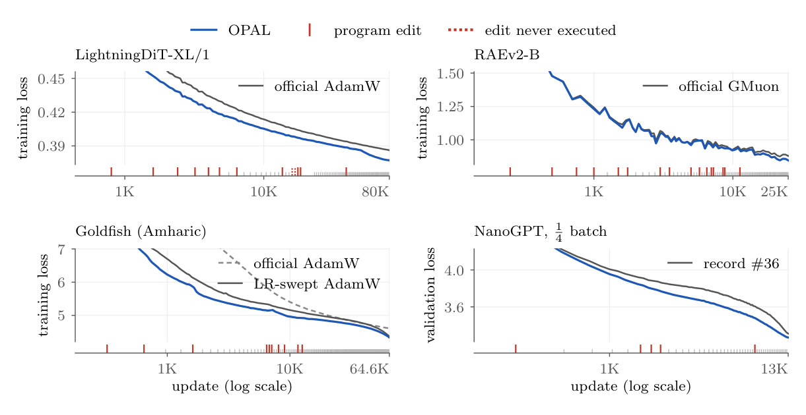
- 红色竖线：改了程序的 decision；左上（例子）13 条，其中两条虚线是没生效的。
- 灰色短线：没改程序的 decision。改动集中在前半段。
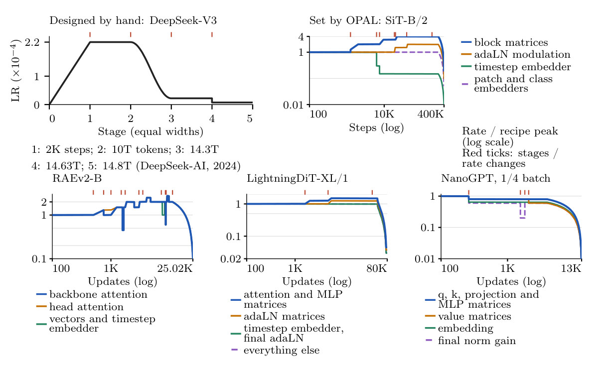
- 每条颜色：一个 parameter group；同一个 run 里各走各的。
- 中下（例子）：蓝色的 attention / MLP 矩阵和橙色的 adaLN 中途升高，末段一起 cooldown（C.3：50K 起）。
- 左下 RAEv2-B：台阶和两处下探就是 Stage 3 里那张 trial-and-error 图。
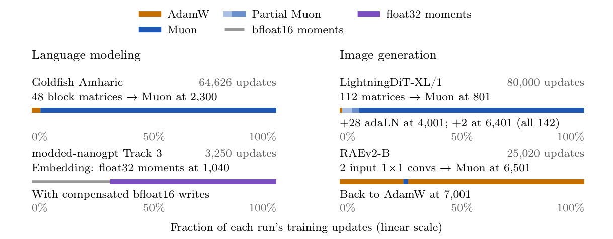
- 右上（例子）：橙色 AdamW 只占开头一小段，801 起转蓝（Muon）。
- 右下 RAEv2-B：6,501 把 2 个输入卷积搬到 Muon，7,001 又搬回 AdamW。
- 左下 NanoGPT：token embedding 的值约 15，相邻 bfloat16 相差 0.0625，learning rate 变小后更新被舍入吃掉 → 1,040 起只给这一个矩阵的 Adam moments 用 float32。
- 说明什么
- schedule 因 run、因 parameter group 而异，还会中途升 learning rate、按模块换 optimizer。这是对行为的描述，不是 ablation。
- 在故事里
- 说明 E1 的增益来自看了训练动态再做的改动。
- 指标
- 没有数值指标；记录每次 decision 的改动和 agent 写的理由。
- 怎么评测
- 四个 run 的完整记录在 Appendix C.3。
- Fig. 3 的图注明说：曲线是整次 run 的结果，没有单独隔离每次改动的效果。
E3只让它调 momentum，能不能走出常见 optimizer 卡住的地形？§3.3 · Fig. 6
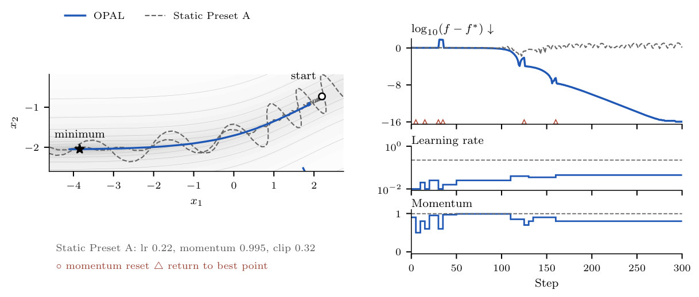
- 左：start 在一个几乎平的 saddle 旁；虚线（固定设置）来回震荡，蓝线走到 minimum（星号）。
- 右上：离最优值的差（log），蓝线降到约 −16，虚线停在 0 附近；红色小标记是 momentum reset 和回到最好点。
- 右下两条：agent 定的 learning rate 和 momentum，平坦处升 momentum，接近 minimum 时降。
- 说明什么
- 同样的预算里离最优值更近。34 个地形平均分 −11.6；12 个常见 recipe 里最好的 −2.2；382,080 个 sweep 出来的 recipe 里最好的 −7.4。
- 在故事里
- “改 momentum”这类行为在大实验里看不清，放到 toy 上单独看。
- 指标
- log10(当前值 − 最优值)，越低越好；每个地形 300 步。
- 怎么评测
- 不限制的话，agent 几次 decision 内就换成二阶方法直接解掉，所以限制它只能用 heavy-ball，只调超参。
- 另给三个动作：清空 momentum、回到目前最好的点、跳到附近随机一点。静态 recipe 没有这些动作。
- 汇总结果在交互版 blog 里，PDF 只给这三个数。
E4数据里混进坏 batch，它能不能自己学会挡住？§3.4 · Fig. 7
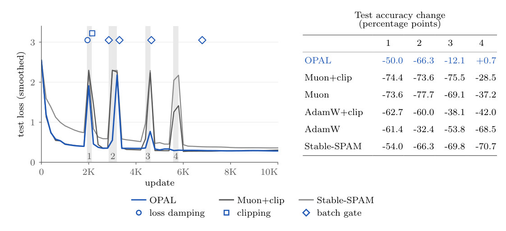
- 左，阴影 1–4：四段坏数据；蓝线（OPAL）在 1、2 段和别人一样冲高，3 段小很多，4 段几乎没有。
- 左，顶上的标记：圆 = 加 loss damping，方 = 换成 clipping，菱形 = 写 batch gate 并调它。
- 右表：每段 test accuracy 掉多少个点；OPAL 是 −50.0、−66.3、−12.1、+0.7。
- 说明什么
- 见过几次之后更稳。第 3、4 段 OPAL 掉 12.1 点和不掉；带 clipping 的 baseline 和 Stable-SPAM 这两段仍掉 28 到 76 点。
- 在故事里
- “对训练事故做反应”的受控版本；大实验里对应的是 SiT agent 把 18 次 gradient spike 里的 17 次追到 timestep embedder，改成每个 tensor 按自己的历史 clip。
- 指标
- 每段坏数据造成的 test accuracy 变化（百分点）。
- 怎么评测
- 不告诉 OPAL 数据被动过。
- baseline：Muon、AdamW，各自带或不带 clipping，以及 Stable-SPAM。
- gate 的做法：loss 远高于近期干净 batch 的 batch 被挡住。
E5训练集里 10% 标签是错的，它能不能不去背错标签？§3.5 · Fig. 8 · Table 1 · C.1
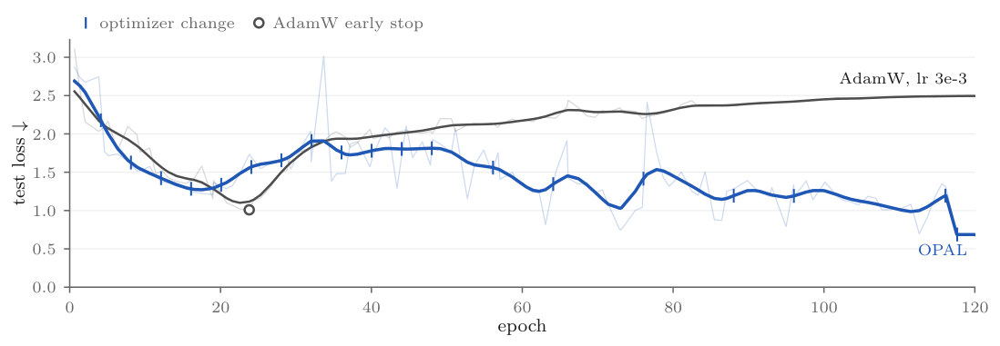
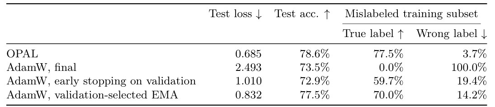
- 说明什么
- 泛化更好，背得更少。test loss 0.685、accuracy 78.6%；AdamW 直接跑完是 2.493、73.5%，最强的 AdamW 版本（validation 选的 EMA）是 0.832、77.5%。标错的图上 OPAL 只有 3.7% 说错标签，AdamW 跑完是 100%。
- 在故事里
- optimizer 能看 validation 信号后，连 overfitting 也能自己处理。
- 指标
- test loss、test accuracy；标错的训练子集上预测真标签 / 错标签的比例。
- 怎么评测
- ResNet-18，CIFAR-10，120 epochs，无 data augmentation；50,000 张里 10% 留作 validation，其余 10% 换成固定的错标签。
- agent 看得到 training 统计和 validation loss / accuracy，不知道有错标签，也看不到 test。
- 起点和 baseline 都是 AdamW，learning rate 3e-3；网络的 logits 做了归一化（LogitNorm 的一种），防止靠缩放 logits 刷 loss。
- OPAL 的做法：validation loss 在 epoch 24、28 上升后，逐步升 learning rate 并做权重平均；最终权重是 epoch 96–117 的平均，在 validation 上选的。
E6要多花多少时间和钱？§4 · Fig. 9
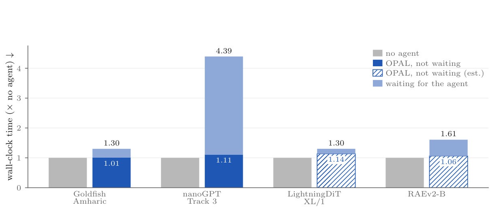
- 灰：不带 agent = 1。深蓝：不等 agent。浅蓝：每次 decision 都停下来等的额外时间。
- 右二（例子）：等的话 1.30×；不等的话 1.14×，斜线表示这是估计值。
- nanoGPT：run 很短，等的话 4.39×。
- 说明什么
- 不等 agent 时时间开销小，token 钱相对 GPU 钱很少。不等：1.01× 到 1.14×；等：1.30× 到 4.39×。例子约 100 次 decision 花 $6.42（Claude Opus 5.5 标价），训练本身约 74 H100-hours（约 $510）。
- 在故事里
- 回答“实用吗”。
- 指标
- wall-clock 倍数；API 费用对 GPU 租金。
- 怎么评测
- 不等时剩下的开销来自 agent 写的东西本身：比原 recipe 更贵的更新规则（Muon 的正交化、float32）和探针的测量。
- LightningDiT 和 RAEv2-B 的“不等”是估计值，论文没说怎么估的。
Limits
局限和开放问题
- 多数实验只跑一次，少数三次；agent 每次选的可能不一样，复现性更差（§4）。
- 没有隔离单次改动的效果（Fig. 3 图注）；哪些改动真的有用不清楚。
- run 短、recipe 已调透时增益缩小：NanoGPT 原设定只追平 #36（§4）；README 还记了一次比 #36 差的 run（3.2878）。
- 大规模训练还缺支持：sharded training、optimizer 编译（§4）。
- 按 FLOPs 算不划算，论文只主张 GPU 小时和 token 是两种不同的资源（§4）。
- agent 的程序在训练进程里跑，“不碰模型和数据”只是规则；它也不能回滚训练，只能下次 decision 再改（README）。
For LLM/Harness
对我们有什么用
- 和
robot-harness同一个形状：agent 低频决策，代码高频执行。区别是这里连“看什么”（analysis.py）也让 agent 自己写；我们的 Supervisor evidence 是固定的。 - 不等 agent 的换入方式可以照搬：循环不停，答案晚到就丢，新程序先试跑 20 步、报错退回上一版。机器人控制循环同样等不起 LLM。
- 可以直接用：
pip install opal-optimizer，agent 就是 Claude Code；适合没有调好 recipe 的几小时以上的训练（README：一次 decision 平均约 40 s）。